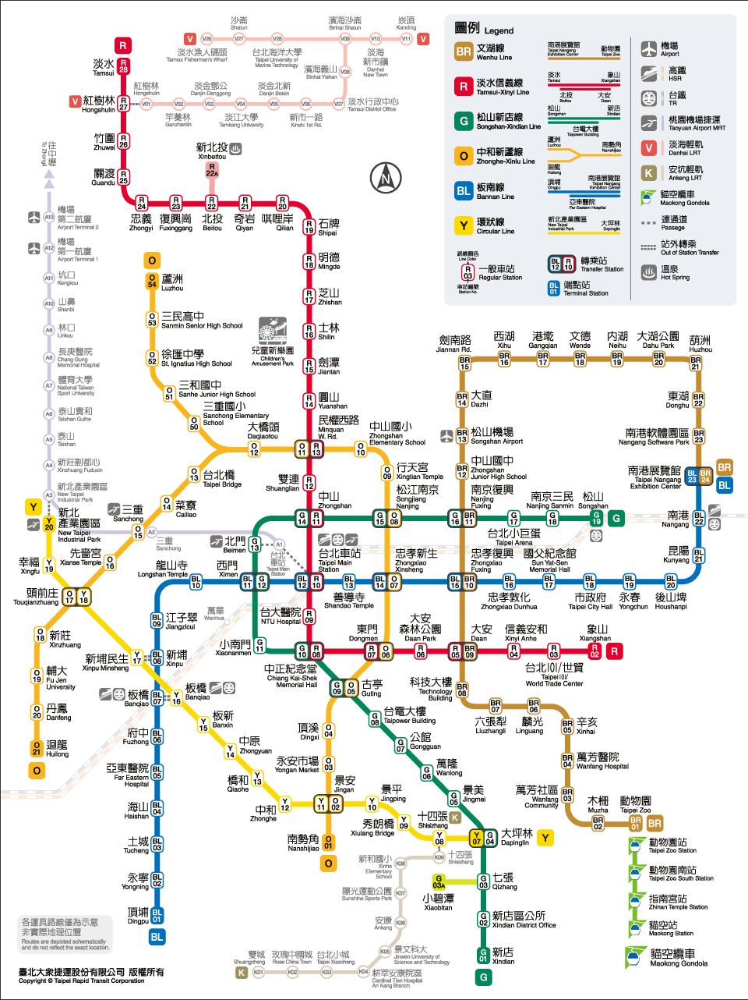

台北捷運路線圖

YouBike 租借費率
| 租借時間 | 費率 (新台幣) | 備註 |
|---|---|---|
| 前 30 分鐘 | $0 (市政府補助) | 需註冊會員 |
| 4 小時內 | $10 / 每 30 分鐘 | 一般騎乘 |
| 4~8 小時 | $20 / 每 30 分鐘 | 長途騎乘 |
| 8 小時以上 | $40 / 每 30 分鐘 | 超長途騎乘 |

| 租借時間 | 費率 (新台幣) | 備註 |
|---|---|---|
| 前 30 分鐘 | $0 (市政府補助) | 需註冊會員 |
| 4 小時內 | $10 / 每 30 分鐘 | 一般騎乘 |
| 4~8 小時 | $20 / 每 30 分鐘 | 長途騎乘 |
| 8 小時以上 | $40 / 每 30 分鐘 | 超長途騎乘 |